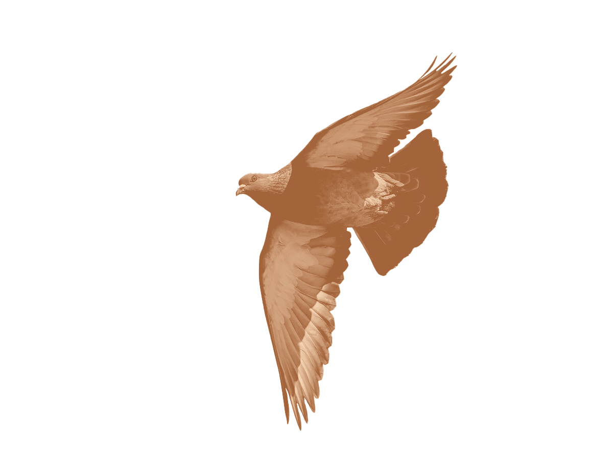
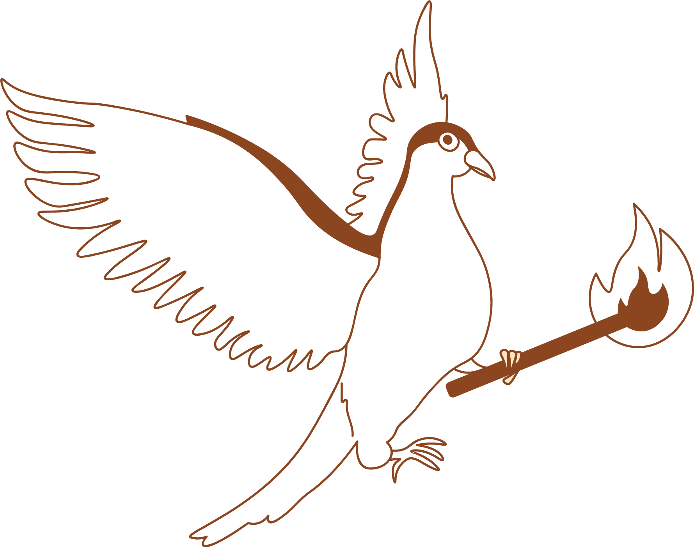
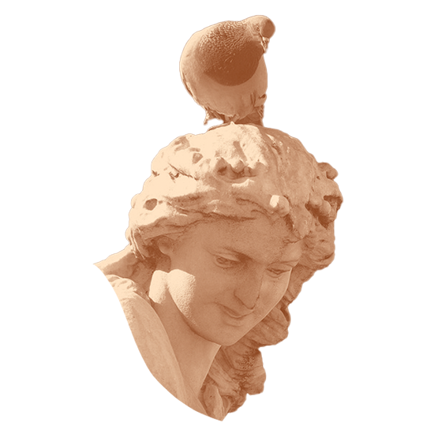
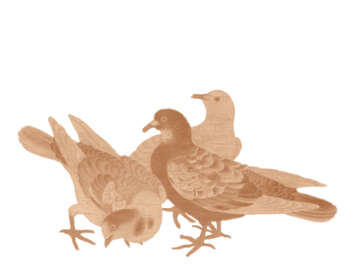
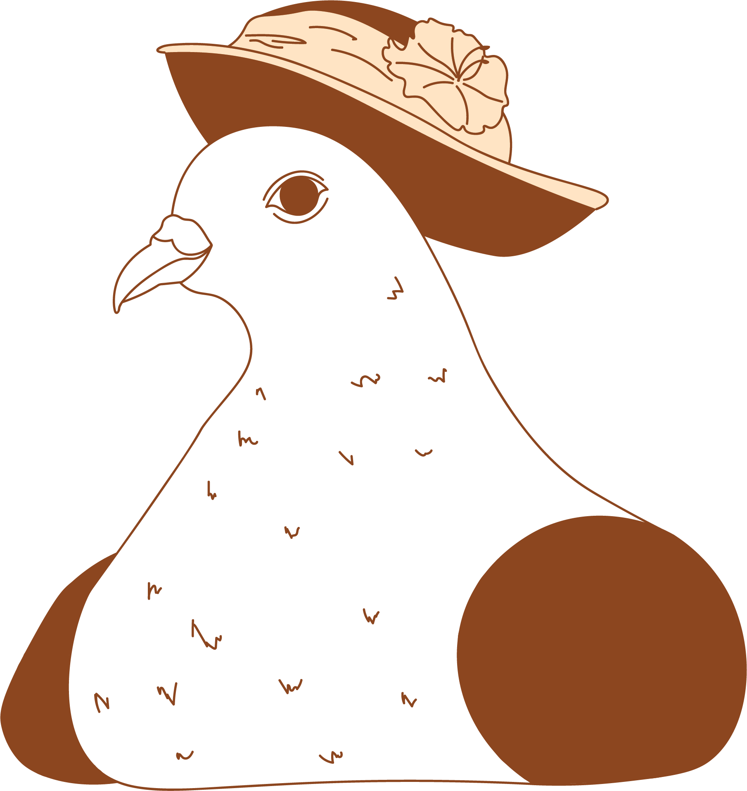
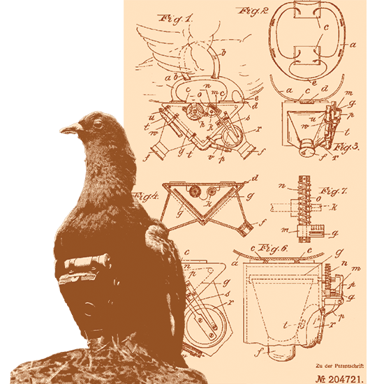
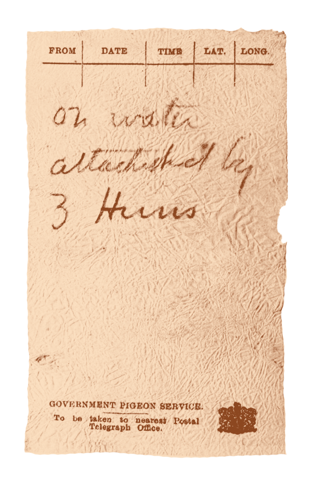

Beginnings of Domestication
The cultivation of pigeons were found to be inscribed on artifacts
from Ancient Mesopotamia and in Egyptian hieroglyphics from around
4500
BC. The earliest known use of “pigeon post” is credited to
ancient Egypt around 1350 BC as messengers for the military, or to
communicate
the news of the Nile’s flooding, something vital
for agriculture. Pigeons were also used for
similarly in ancient
Mesopotamia and Persia.
18th Century BC
In 8th century BC, pigeons were used in Greece
to transport
messages to many cities during the early Olmypic Games, providing
winning and
losing information.


44 BC-96AD
Pigeons were used in Rome for food, racing, and communication.
In 44-43 BC, pigeons were used at the siege of Mutina, in which
the Senate refused Mark Anthony’s wishes to remove Decimus Brutus
(an assassin of Caesar) from power in exchange for the governorship
of Cisalpine Gaul. It was Mark Antony who launched the siege. In
Pliny the Elder’s Natural History, written in 77 A.D., he mentions
how Brutus attached despatches to the camp of the consuls. Later,
in a treatise on military strategies in Frontinus’ Stratagems,
around 84-96 A.D., he credits Brutus’ ally Hiritius for their usage
as well. He says, “Hirtius also shut up pigeons in the dark, starved
them, fastened letters to their necks by a hair, and then released
them as near to the city walls as he could. The birds, eager for light
and food, sought the highest buildings and were received by Brutus,
who in that way was informed of everything, especially after he set
food in certain spots and taught the pigeons to alight there.”
1368-1644 vs The Modern Age
As in other cultures, pigeons were used in the Chinese Ming Dynasty’s army
as couriers; however, they were banned during its cultural revolution as they
were seen as too capitalist. In the more modern era, however, they made a
resurgence in the 1970s. There is a large demand for pigeons from Chinese buyers,
whether for companionship, racing, or lux-
ury goods. Today, 300,000 citizens are
involved in pigeon racing, some competing in competitions
with a prize of millions
of dollars.


19th Century
These beloved birds were greatly prized among royalty as pets and were a privilege to
cultivate. This affection continued well into the Victorian era, when England was the
capital of pigeon fancying. There were even attempts to protect the craft, though they
eventually became associated with
the poor rather than the bourgeois.
Pigeon racing as a sport began in Belgium in 1818, where the first
long-distance race was held, stre-
tching more than 160km. Its popularity
eventually sprouted a Société Colombophile/Pigeon-fanciers Club in almost
every village in the country, while the sport itself giained popularity
in Great Britain, the United States, and France in the late 1800s. Other
than sports, pigeons were once again used as messengers in Europe during
the Revolution in 1848 and the telegraphic interruptions between Berlin and
Brussels in 1849.
20th Century
In 1907, a German apothecary Dr. Julius Neubronner patented a timed camera that could
be attached to a pigeon for arial photographs to be taken in flight and with ease, at great
ditances and speeds. Truly
a precursor to modern day drones! He initially dev
-eloped
this to track the flights of his own homing pigeons which were used to deliver perscriptions, but this led to the astounding
achievement of some of the earliest images taken of the Earth from atop.
This technology
would be further developed for war efforts to document events and spy on enemies.


WWI & WWII
In both World Wars, carrier pigeons were not
only used for strategic
communication, but were sometimes a last plea for help from cornered,
injured, and stranded soldiers. During World War
II, under the AAF,
homing pigeons transmitted a myriad of messages, ult-imately contributing
greatly to the Allied war effort. 32 pigeons were later decorated with
the Dickin Medal. Despite completing their missions, many retained injuries
or died from exhaustion or being shot by enemies.